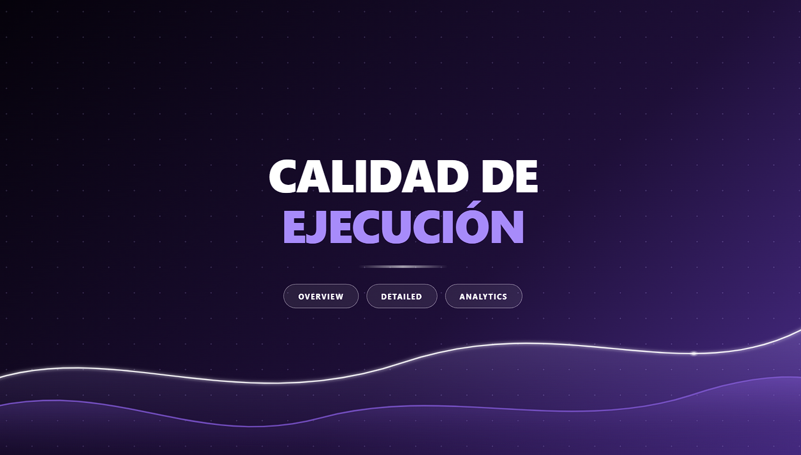
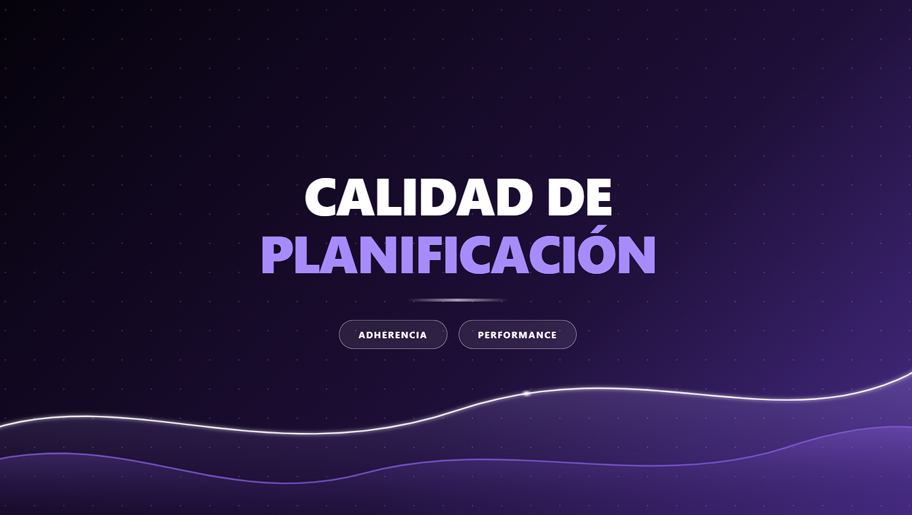
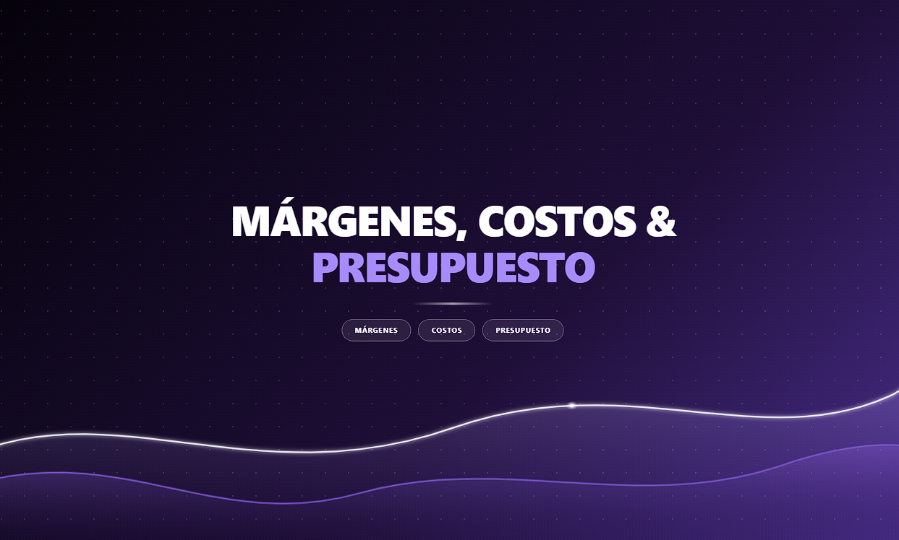

Convierto datos dispersos en dashboards de Power BI que ayudan a los equipos a decidir más rápido. Aquí hay una selección de mi trabajo, con datos ficticios para proteger la información de mis clientes.

Siete indicadores de ejecución en terreno, del asignado al puntual, con umbrales ajustables y reporte semanal.

Cuánto se respeta el plan optimizado por cliente, depot y planificador, con alertas cuando la calidad cae.

Rentabilidad por cliente y contrato, estructura de costos y cierre del año proyectado contra el presupuesto.
Esquema estrella, relaciones, tablas de calendario.
Medidas de tiempo, KPIs, cálculos de contexto.
Limpieza y transformación de fuentes diversas.
Jerarquía visual pensada para quien decide.